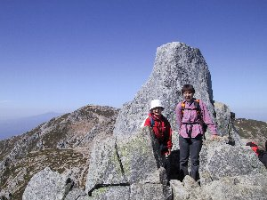

木曽駒が岳 | ２００２．１０．１３ |
 ロープウェイ降りたところから | ＜メンバー＞いづみ ぞう ハチ ベッシー のび太 木曽駒ヶ岳は天気も良く、駐車場のすぐ上では、満天の星も見れて良かった。駐車場に午前１時頃に到着して、テント・車中に分かれて仮眠。 ５時からの駐車場への車の乱入と、バス待ちの行列の長さに飽きれてしまった。バス待ちの列の中で、先に順番取りしてくれたべっしーさんを探すものの、先頭から行けども行けどもいない、？！ 駐車場の端っこ、のびた号のそばで発見したときには「後ろから来たほうが早いじゃん」状態。観光客パワーのすごさを、見せ付けられた。（マジで半端じゃない） １時間半順番待ちの間に、木曽駒ヶ岳を眺めながら、立ったままでの「朝食」。（いや、俺は食ってない）朝日を浴びた山々を見ながら、綺麗な空気の中での朝食は、それなりに「贅沢」だと思ったのは、私だけ？ |
| やっとバスに乗ってから50分（あれ、３０分ぐらいでは）で、着きました「ロープウェイ駅」へ。しかし、「整理券」を配ってる〜〜。1時間半待ちと掲示板に書いてあったが、「搭乗予定時刻」は「集合時刻」であった！（その時間から、ゆうに30分はかかった） 乗ってしまったら、あっという間（８分間）に着いた。紅葉はあちらこちらにポツポツでしたが、天気が良く空が青く澄んでいて、とっても美しかった。 歩いている時間が短かったが、人が多くて大変だった。暑くて、日差しが痛い〜！（翌日お肌ぼろぼろ） 山頂まで到着してお昼とし、綺麗な景色を堪能しながら記念撮影等、楽しい時間を過ごした。 下山の途中で、いづみさん、のび太、他３名で分かれて行動。いづみさんがロープウェイ整理券をとってくれたので、（ありがとう）（サンキューです）スムーズに行くことが出来ました いづみさん以外の人は、宝剣岳に行った。 まず、のびたさんが「走って」。べっしー、はち、ぞうさんは下で、のび太の山頂に立つ姿をカメラに収めるべく待ちましたが、良くわからなかった。（後で聞いたら立ってないとのこと） |  空が青いね |
 あっ、気をつけて〜！（宝剣岳途中） | それから交替し、宝剣岳を目指しました。しかし足場は良くなく（クライマーなら大喜びしそう）、怖かった。事実、山頂の小さな石の上（下の写真）で、クライマーさんのような人がポーズとっていましたが、おっかなくって行けませんでした。でも、人が多いせいか続々と人が登ってきて、狭い山頂は大渋滞。何とか降りることが出来ましたが、あの上に居ると「高さ・怖さ」の感覚が薄れてくるのが恐ろしかった。 千畳敷駅には、呼び出しギリギリの時間で到着のため、最後はダッシュ！ 無事下山し、駐車場でお土産を買って、温泉に。いい温泉で疲れを癒し、静岡に21時頃到着、最終磐田には23時到着。お疲れまでした〜。 ＜のび太談＞ 宝剣岳山頂の小さい岩には結局登れなかった。ヤマヤの「のび太」としても、あれだけ澄んだ空は殆ど見ることが無い。バス・ロープウェイの待ち時間は長かったが、それ以上に楽しめました。 |
| ＜いづみ談＞ 満天の星・雲一つない青空・山頂からのパノラマビュー、全てが素晴らしかった。とくに、南アルプスの稜線の美しさは、神々しくて何とも言えない気持ちに・・・。 来年、あのテント場で『星見会』、絶対やろうねっ。 約束だよ♪ ＜ハチ談＞ たすまんずハイキング企画に参加させてもらうこと、３度目。ついに晴れたっ！晴れましたっ！３度目の正直ってやつですね。 真っ青な空の下で見た景色は本当に素晴らしかった！！！ 鎖場アリの宝剣岳はスリル満点で駒ケ岳山頂とは一味！？二味！？違う気分。本当は宝剣岳山頂（岩のところ）に登りたかったが私にはそんな度胸はなかった・・・泣 |  やりました宝剣岳！ 立つって言うのはこの岩の上 |